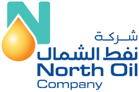

💼 Experience

Digital Platform & DevOps Specialist Consultant
North Oil Company
- Led DevSecOps strategy across hybrid cloud environments, embedding security into CI/CD pipelines and reducing vulnerability exposure.
- Design & building solutions, guardrails, and platforms that enable AI to move from experimentation to production-grade adoption at scale using Agile principles.
- Automated Data & Application platform deployments using IaC, reducing manual effort and enhancing processing speed and release quality.
- Migrated legacy applications to Azure Cloud, providing end-to-end support across frontend and backend SDLC phases, ensuring performance continuity.
- Implement cloud security and compliance measures, ensuring that NOC infrastructure meets industry standards and regulations.
- Engineered secure pipelines using SAST, DAST, dependencies scanning, and secrets management with SonarCloud, Veracode, and GitHub Advanced Security.
- Resolved critical software issues and implemented preventive measures for digital teams, improving sprint velocity by 25% and reducing deployment friction.
- Achieved 30% cost reduction by reviewing agreements, proposing optimizations and implementing a consumption-based, data-driven approach.
Data Platform Engineer
Telia Company
- Architected and designed an API to provide rapid self-service recommendations for business users.
- Designed and developed a Kubernetes containerized platform for internal users to address resource challenges for app deployment.
- Integrated HashiCorp Vault for GitHub workflow actions to enhance security and encryption as a service.
- Architected and implemented real-time streaming data analytics to evaluate product impacts on the market.
- Implemented a tagging strategy using Terraform across the organization to organize and govern resources effectively.
- Developed data visualizations that reduced Data Warehouse costs by 30%.
- Led FinOps initiatives across the Data & Analytics platform to cultivate a mature financial management discipline and culture.
- Setup Datadog dashboards for monitoring real-time and historical metrics and system alerts, ensuring operational excellence.
ICT Cloud Lead
Ericsson
- Provided cloud advisory to internal teams according to the Well-Architected Framework (WAF).
- Helped successful migration of 100+ solutions in Amazon Web Services (AWS) public cloud with best practices.
- Architected, designed, implemented and deployed Serverless Cost Management solution for chargeback and show back.
- Implemented (IaC) and developed application to provide self-service and secure infrastructure for consumer of Hybrid Cloud platform.
- Proposed and led cross-cloud (AWS, Azure, GCP) architecture in access, network and security domain.
Senior Data Engineer
Ericsson
- Successfully designed and implemented scalable and high-performance distributed DataStream application with Data Quality focus.
- Designed and implemented microservices for Data Pipeline to process network data and bring values.
- Design and implementation of monitoring and integrated services to provide incident management using Prometheus and Grafana.
- Designed and implemented datasets to ingest new data types, crunching and early transformation for Data Scientists and Analysts.
- Containerized microservices Data solution using Docker and Kubernetes tools.
- Designed and implemented ETL pipelines to curate raw data into provisioned datasets.
🛠 Technical Skills
Cloud Platforms
Data & Streaming
Container & Orchestration
Infrastructure & Automation
Monitoring & Observability
Programming Languages
🎓 Education
MBA Industrial Management
2019 - 2022
Diploma Applied Data Science
11 weeks in 2020
M.Sc. Wireless Communication
2009 - 2011
🌐 Languages
English
Full Professional Proficiency
Urdu
Native
Swedish
Working Proficiency
🎯 Hobbies & Interests
Sports
- Floor Hockey
- Tennis
- Badminton
- Football
Passions
- Data Analytics
- Tech Meetups
- Cloud Innovation
- Reading & Learning